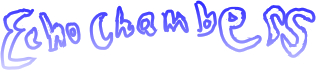
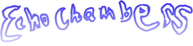
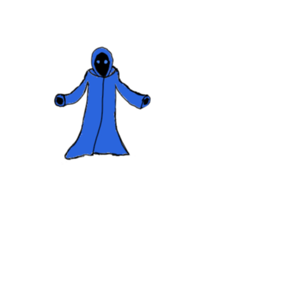
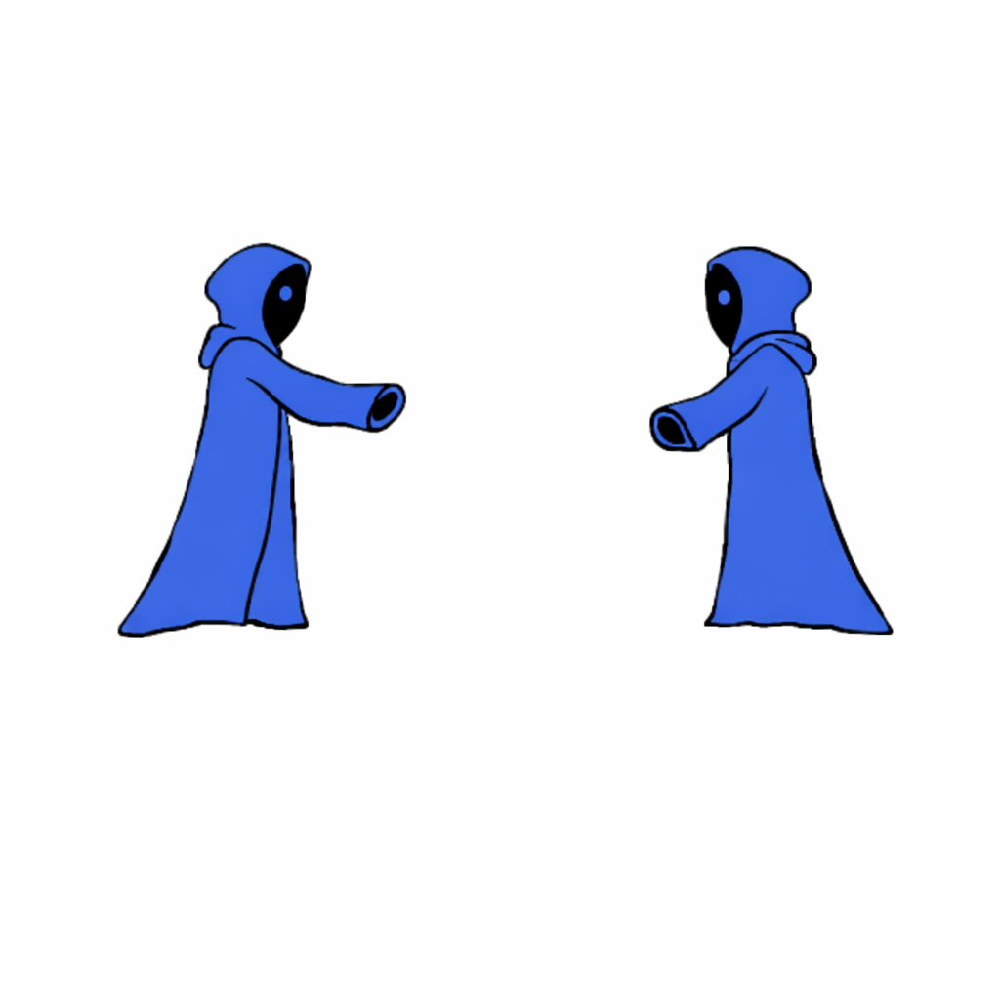
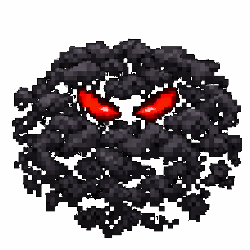
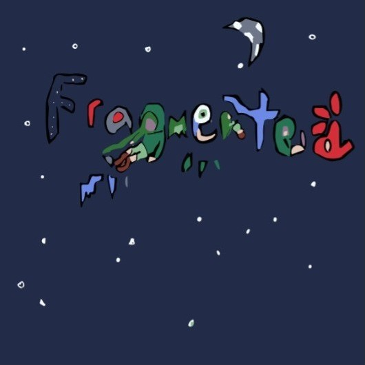
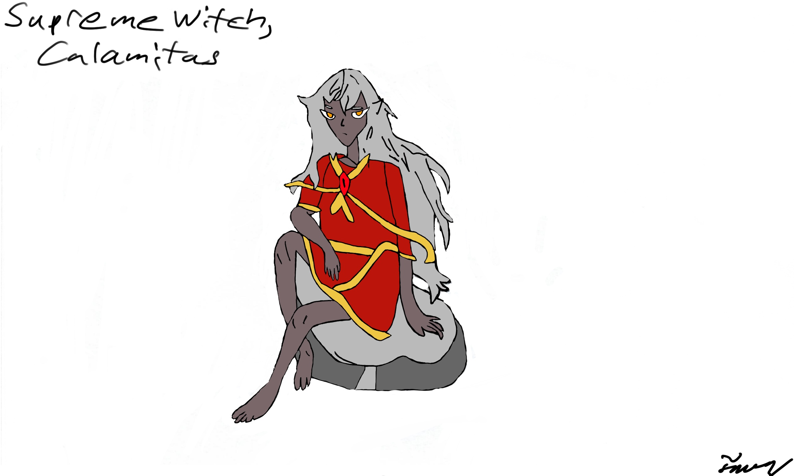

Hello There!
Here are some images of my created arts pieces
Echo Chambers Logos (one is a JPEG, the other is a WEBP)


The Cowled Warlock (a servant boss that never made it into the game)


The Voidency Unnamed (a servant boss that never made it into the game)

Other Game Art
Fragmented Game Logo (a scrapped visual novel game that was never completed)

Some art I've made for nothing more than the fun of drawing
From the Terraria Calamity Mod, I present to you, the Supreme Witch, Calamitas!
